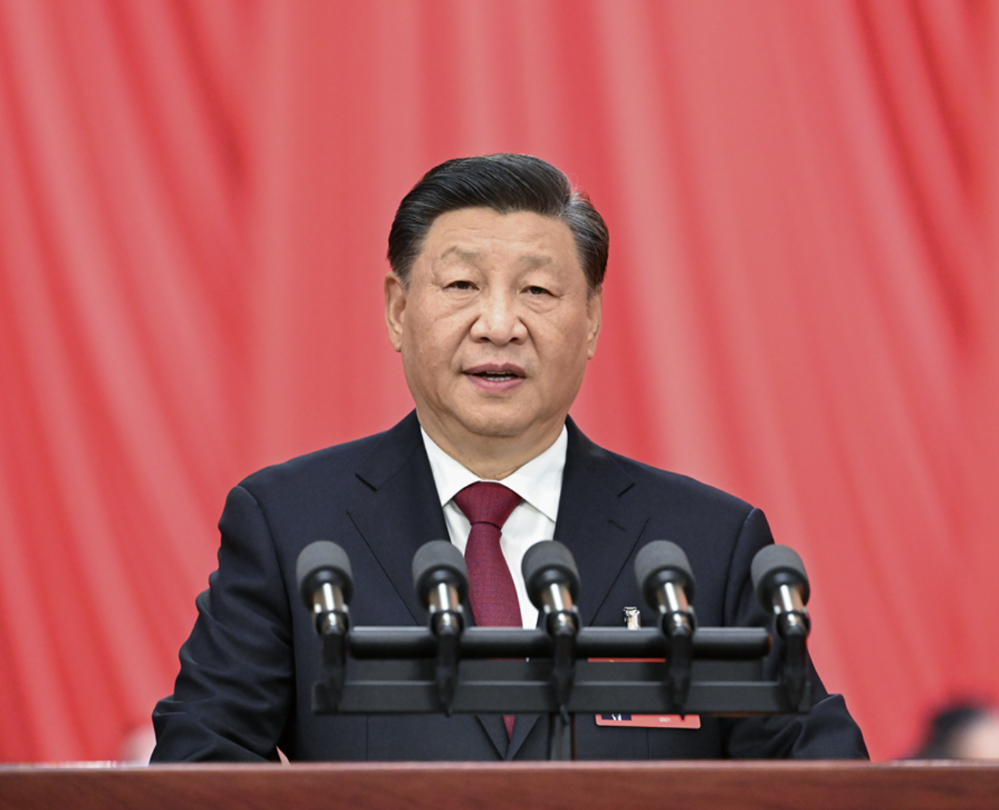

同志们：
现在，我代表第十九届中央委员会向大会作报告。
中国共产党第二十次全国代表大会，是在全党全国各族人民迈上全面建设社会主义现代化国家新征程、向第二个百年奋斗目标进军的关键时刻召开的一次十分重要的大会。
大会的主题是：高举中国特色社会主义伟大旗帜，全面贯彻新时代中国特色社会主义思想，弘扬伟大建党精神，自信自强、守正创新，踔厉奋发、勇毅前行，为全面建设社会主义现代化国家、全面推进中华民族伟大复兴而团结奋斗。
中国共产党已走过百年奋斗历程。我们党立志于中华民族千秋伟业，致力于人类和平与发展崇高事业，责任无比重大，使命无上光荣。全党同志务必不忘初心、牢记使命，务必谦虚谨慎、艰苦奋斗，务必敢于斗争、善于斗争，坚定历史自信，增强历史主动，谱写新时代中国特色社会主义更加绚丽的华章。
十九大以来的五年，是极不寻常、极不平凡的五年。党中央统筹中华民族伟大复兴战略全局和世界百年未有之大变局，召开七次全会，分别就宪法修改，深化党和国家机构改革，坚持和完善中国特色社会主义制度、推进国家治理体系和治理能力现代化，制定“十四五”规划和二〇三五年远景目标，全面总结党的百年奋斗重大成就和历史经验等重大问题作出决定和决议，就党和国家事业发展作出重大战略部署，团结带领全党全军全国各族人民有效应对严峻复杂的国际形势和接踵而至的巨大风险挑战，以奋发有为的精神把新时代中国特色社会主义不断推向前进。
同志们！十八大召开至今已经十年了。十年来，我们经历了对党和人民事业具有重大现实意义和深远历史意义的三件大事：一是迎来中国共产党成立一百周年，二是中国特色社会主义进入新时代，三是完成脱贫攻坚、全面建成小康社会的历史任务，实现第一个百年奋斗目标。这是中国共产党和中国人民团结奋斗赢得的历史性胜利，是彪炳中华民族发展史册的历史性胜利，也是对世界具有深远影响的历史性胜利。
责任编辑：罗一坤